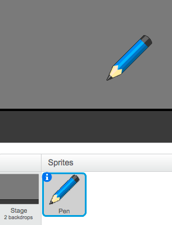
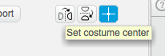
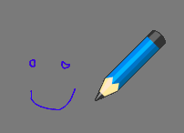
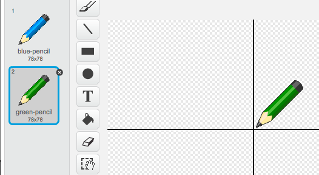
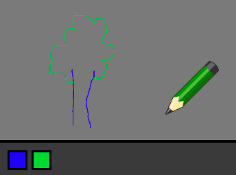
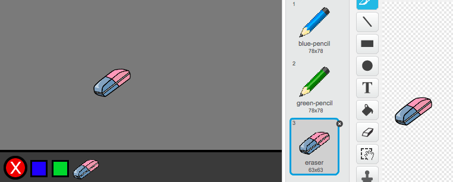
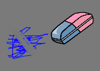
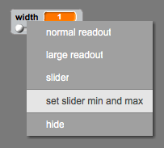

Let’s start by making a pen, that can be used to draw on the stage.
Activity Checklist
Start a new Scratch project, and delete the cat sprite so that your project is empty. You can find the online Scratch editor at jumpto.cc/scratch-new.
For this project, you should have a ‘Project Resources’ folder, containing all of the images you’ll need. Make sure that you can find this folder, and ask your club leader if you can’t find it.
screenshot
Let’s add the drawing canvas image to your stage. Click the stage, and then click ‘Upload backdrop from file’.
screenshot
Find your ‘Project Resources’ folder, and choose the file called ‘frame.png’. If you don’t have this image you can draw your own backdrop! Your stage should now look like this:
screenshot
Let’s also add a pen to your project. Click ‘Upload sprite from file’ and choose the image called ‘blue-pencil.png’ from your resources folder. Again, if you don’t have this image you can draw your own. Click the i icon, and name this sprite ‘Pen’.
screenshot
As you’ll be using the mouse to draw, you’ll want the pen to always follow the mouse. Add this code to your pen sprite:
when flag clicked
forever
go to [mouse pointer v]
end
Test out this code by clicking the flag and then moving the mouse around the stage. Does this work as you expected?
Have you noticed that it’s the centre of the pen, and not the tip, that follows the mouse pointer?
screenshot
To fix this, click on the ‘blue-pencil’ costume of your pen sprite, and click ‘Set costume center’.
screenshot
You should notice that a crosshair appears on the costume. You can now click just below the tip of the pen, to set this point as the costume centre.
screenshot
Click the ‘Scripts’ tab, and then test out your pen again - does it work better than it did before?
Next, let’s make your pen draw whenever the mouse has been clicked. Add this code to your pen sprite:
when flag clicked
forever
go to [mouse pointer v]
if <mouse down?> then
pen down
else
pen up
end
end
As well as using a forever loop to make the pen follow the mouse, you’ve now also used an if statement to draw on the stage if the mouse button is being held down.
Test your code again. This time, move the pen around the stage and hold down the mouse button. Can you draw with your pen?
screenshot
There’s one more problem with the pen - you can draw anywhere on the stage, including the bit below the drawing surface!
screenshot
To fix this, you have to tell the pen only to draw if the mouse is clicked and if the y-position of the mouse is greater than -110 (mouse y> -110). Change your pen’s if statement to look like this:
when flag clicked
forever
go to [mouse pointer v]
if < <mouse down?> and < (mouse y) > (-110) > > then
pen down
else
pen up
end
end
Test your project; you now shouldn’t be able to draw below the drawing surface.
screenshot
Save your project
Step 2: Coloured pens
Let’s add different colour pens to your project, and allow the user to choose between them!
Activity Checklist
First, let’s add another green pen costume to your pen sprite. Click on your pen sprite, and click ‘Upload costume from file’ and select the ‘green-pencil.png’ image to add it to your sprite. Remember to set the centre of your new costume.
screenshot
You also need to add two sprites, that will be used to select the colour of the pen. Click ‘Upload sprite from file’ to add both the ‘blue-selector.png’ and ‘green-selector.png’ images as separate sprites.
Your stage should now look like this:
screenshot
When the green selector icon is clicked, you need to broadcast a message to the pen sprite, telling it to change its costume and pen colour. To do this, firstly add this code to the green selector icon:
when this sprite clicked
broadcast [green v]
To create the broadcast block, click the down arrow and select ‘new message…’.
screenshot
You can then type ‘green’ to create your new message.
screenshot
You now need to tell your pen sprite what to do when it receives the message. Add this code to your pen sprite:
when I receive [green v]
switch costume to [green-pencil v]
set pen color to [#00FF00]
To set the pen to colour to green, click the coloured box in the set color block, and click on the green selector icon to choose green as your pen colour.
You can now do the same for the blue pen icon, adding this code to the blue selector sprite:
when this sprite clicked
broadcast [blue v]
…and adding this code to the pen sprite:
when I receive [blue v]
switch costume to [blue-pencil v]
set pen color to [#0000FF]
Finally, you need to tell your pen sprite what costume and pen colour to choose, as well as clearing the screen, when your project is started. Add this code to the beginning of the pen’s when flag clicked code (before the forever loop):
clear
switch costume to [blue-pencil v]
set pen color to [#0000FF]
If you prefer, you can start with a different colour pen!
Test out your project. Can you switch between blue and green pens?
screenshot
Save your project
Step 3: Making mistakes
Sometimes mistakes happen, so let’s add a ‘clear’ button and an eraser to our project!
Activity Checklist
As well as clearing the canvas when your project is started, let’s add a button to clear the canvas as well. To do this, add a new sprite using the ‘cancel-button.png’ image in your ‘Resources’ folder.
screenshot
Add code to this new cancel button to clear the canvas when it’s clicked.
when this sprite clicked
clear
Notice that you don’t need to send a message to clear the canvas, as any sprite can do it!
You can also create an eraser. To do this, add the ‘eraser.png’ image as a new costume to your pen sprite (remember to set the costume centre) and as a new selector sprite.
screenshot
You can then add code to the eraser selector sprite, to tell the pen to switch to an eraser.
when this sprite clicked
broadcast [eraser v]
When the pen receives this message, you can create an eraser by switching the pen costume to the eraser, and switching the pen colour to the same colour as the canvas!
when I receive [eraser v]
switch costume to [eraser v]
set pen color to [#8d8d8d]
Test your project, to see if you can clear and erase on the canvas.
screenshot
Step 4: Changing the pen width
Let’s allow the user to draw using a range of different pen sizes.
Activity Checklist
First, add a new variable called ‘width’. If you’re not sure how to do this, the ‘Balloons’ project will help you.
Add this line inside the forever loop of your pen’s code:
set pen size to (width)
Your pen width will now repeatedly be set to the value of your ‘width’ variable.
You can change the number stored in this variable by right-clicking on your variable (on the stage) and clicking ‘slider’.
screenshot
You can now drag the slider below the variable to change its value.
screenshot
Test your project, and see if you can modify the pen width.
screenshot
If you prefer, you can set the minimum and maximum value of ‘width’ that’s allowed. To do this, right-click on your variable again and click ‘set slider min and max’. Set the minimum and maximum values of your variable to something more sensible, like 1 and 20.
screenshot
Keep testing your ‘width’ variable until you’re happy.
Save your project
Challenge: Shortcuts
Can you create keyboard shortcuts for your commands? For example: + b = Switch to blue pen + g = switch to green pen + e = switch to eraser + c = clear screen
You could even allow the user to change the pen width with the arrow keys!
Save your project
Challenge: More pens
Can you add red, yellow and black pens to your paint program? You’ll find all of the images you need in your ‘Resources’ folder. Remember to add keyboard shortcuts for these new pens!